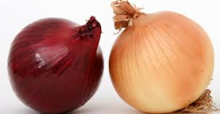

SON UNA DE LAS VERDURAS MAS UTILIZADAS Y CULTIVADAS DEL MUNDO

Es el alimento mas comun en la cocina y tambien es uno de los pocas verduras que le hacen llorar a la gente quando se corta se pueden hacer muchos platos con la cebolla el plato mas comun es la cebolla caramelizada.
Su sabor es muy agrio no le gusta a nadie pero si lo echas en la comida si estas preparando le da un Sabor muy bueno